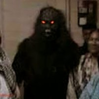
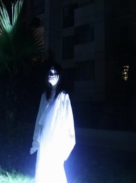
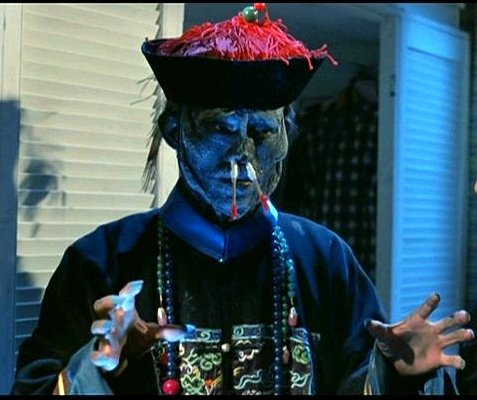
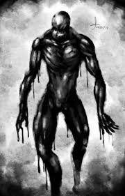
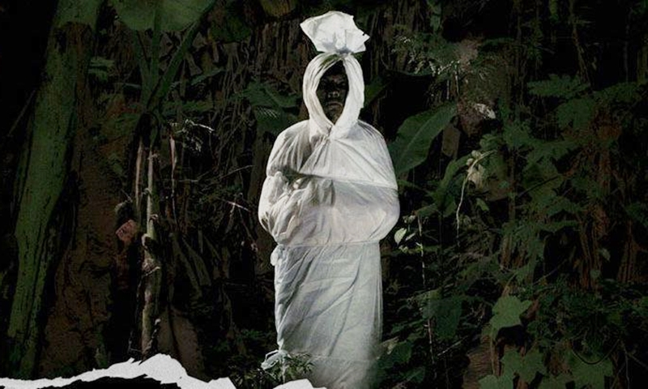
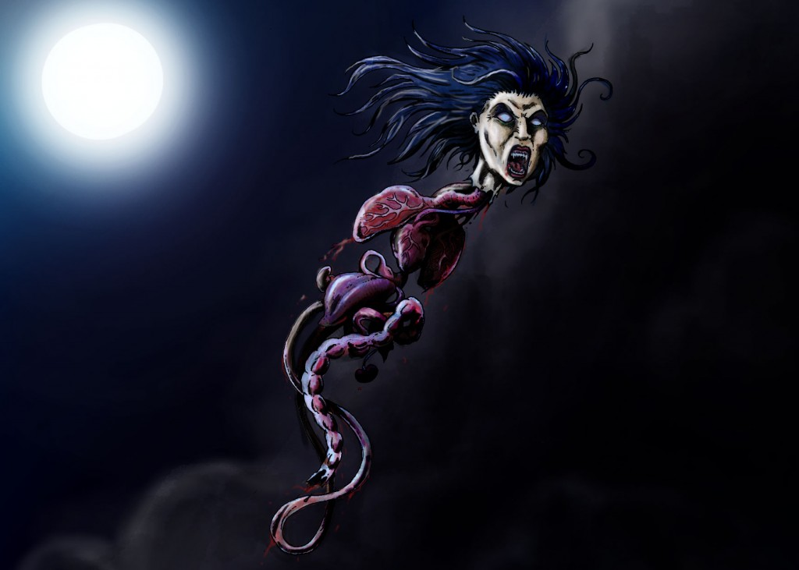
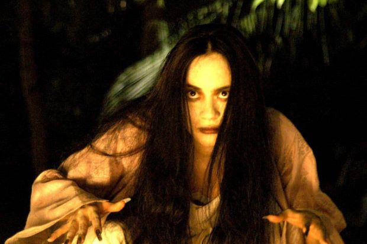
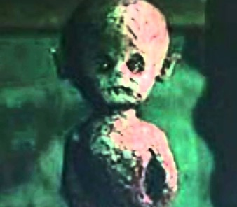

In Malaysia, it seems, you’re never too far from a ghost. It’s not inherently good or bad, it’s just in the air. All cultures have some variety of ghost story, by that name or another. But some are more pervasive and deeply ingrained than others. It isn’t really possible to identify the most ghost-heavy culture on the planet—there’s no clear metric for how one would judge such a thing. But few ghost cultures are as powerful and varied as the ones found in Malaysia, they can perform jumpscares or attack the passerby, we gather it and add them into [Ghostpedia].
-
H
- Hantu Raya(喜鬼)
-

The hantu raya is believed to be the ‘master’ of all ghosts in the underworld. No, they’re not ghosts which haunt people during Hari Raya. The hantu raya can take up any shape or form though they usually choose the image of humans or animals. They feed on offerings from people such as yellow glutinous rice, eggs, roasted chicken, etc. Sometimes, they even feed on animal blood. There are people who believe that they have owners just like the toyol. These owners are usually powerful bomohs.
根据马来传统，喜鬼是精灵或恶魔。它们可以帮助它的主人在工作上达到目的，同时也可以伤害主人的敌人。 制造喜鬼是要通过椰树被雷电击中。喜鬼的主人可以要求它做任何类型的粗工。 喜鬼也可以听从主人的吩咐来附在某人的身上。喜鬼拥有可以变成一个普通人或其他动物的能力。 通常喜鬼会变身为一个妇女和老人，或者像去世的主人面相。喜鬼需要被主人喂食。 通常的食物包括鸡蛋，烤鸡肉，米黄色等。如果没有适当的照顾和喂养，饥饿的喜鬼会攻击它的主人。 喜鬼很容易被继承。如果没有传递到继承人，喜鬼会附生在死去的的主人的身体。 他的身体将是死的带臭味。但被掩埋时，它会像一个活人一样起身。此外，它会活得像个活人。 - Hungry Ghost（饿鬼）
-

Chinese people believe that on the 7th Lunar month, the gates of hell will open and spirits will be released into our world. These souls from hell along with the wandering spirits in our world are usually ‘hungry’ as they rely on descendants to burn hell money and offer food to them. Some spirits become rather cheeky and are believed to play tricks on humans. Others with vengeance would often haunt people or places. There have been many cases of ghost sightings on the 7th month. During this month, humans would place food offerings and burn hell notes to appease the spirits.
农历七月，是我国民俗传说中的“鬼月”。据说每年农历七月初一，便会打开鬼门，放出饿鬼， 一直到七月三十日才关上鬼门。为了让阴阳二界的人鬼都平安，我国自古以来，便有在七月设醮普渡的习俗。 民间在七月鬼月的第一天、第二天、第十五天和最后一天都要进行拜祭。 鬼月的禁忌也很多，不穿带自己名的衣服、不拍别人肩膀、不吹口哨、小孩老人体弱者夜晚不外出等
-
J
- Jiang Shi（僵尸）
-

Jiang shi is the Chinese version of a vampire. They are a stiff corpse dressed in official garments from the Qing Dynasty and would jump around with their arms outstretched. They only come out at night and suck on living human’s qi or life force. During the day, they rest in dark places such as a cave or in their coffin. These jiang shi are believed to be reanimated corpses due to supernatural powers or possession by spirits. They need to feed on qi to become fully ‘alive’ once again. There are many ways to ward off these Chinese vampires. The most common method is to stick the ba gua (eight trigrams), which is a Taoist symbol, on the jiang shi‘s head. The spirit should immediately stop moving unless the paper falls off.
在中国民间传说中，特指人死后因为尸体阴气过重而变成的鬼怪，毫无人性，丧失理智，双手向前横着伸直展开，且用双腿不停跳跃， 从而移动的行尸走肉，除了头部和四肢，身子其他部位难以运动；会以咬人吸血传染尸毒，被咬者若不在尸变之前救治，就会彻底变成僵尸无法恢复。 加上由于近代影视的设想，往往会拥有超自然力量，比如力大无穷、刀枪不入、抗腐化等；甚至会使用武器和武功攻击人类。
-
O
- Orang Minyak（油鬼子）
-

According to Malay legend, Orang Minyak is a creature that abducts young women by night. Supposedly, the creature is able to climb walls and grab victims while evading capture due to its slippery coating.According to some folklorists, the Orang Minyak has been alternately described as appearing naked, or wearing "a black pair of swimming trunks". A number of stories describe the Orang Minyak as a rapist that only targets virgins. The Orang Minyak has been traditionally blamed for rapes, beginning in the 1950s, and superstitious Malay female students would attempt to ward off the creature by donning sweaty clothing "to give the appearance of someone who had just been with a man".
油鬼子（Orang Minyak）传说油鬼子因犯了滔天大罪而全身变成黑色，犹如涂了一层黑油，必须要强奸40个女子才能恢复正常之躯。 它常常破屋行窃，即使已经上锁的屋子，他都有本事潜入。它还可以在被追逐下突然消失、像壁虎般攀在墙上等等。
-
P
- Pocong(婆众)
-

A pocong, also known as shroud ghost, is an Indonesian and Malaysian ghost that is said to be the soul of a dead person trapped in its shroud. Known in Indonesia/Malaysia as kain kafan, the shroud is the prescribed length of cloth used in Muslim burials to wrap the body of the dead person. The dead body is covered in white fabric tied over the head, under the feet, and on the neck. According to traditional beliefs, the soul of a dead person will stay on the Earth for 46.3 days after the death. If the ties over the shroud are not released after 46.3 days, the body is said to jump out from the grave to warn people that the soul needs to be released. After the ties are released, the soul will leave the Earth forever. Because of the tie under the feet, the ghost can't walk. This causes the pocong to hop like a rabbit. They also have the ability to fly and teleport all around the universe.
婆众(Pocong)近似于埃及木乃伊，一开始指的是包尸体的白布，后来演变成指“有灵魂存在的僵尸”。 在信奉回教的东南亚一带，人死后要立刻包起白布当天下葬，而亡者的灵魂会在人间停留40天，要是他们还得不到解脱，或执着于某些事情，就会从土里蹦出，变成“婆众”。 - Penanggalan(飞头降)
-

In Malaysian folklore, penanggal are mortal women who practice black magic. To become a penanggal, a woman must meditate during a ritual bath in vinegar, with her whole body submerged except for the head. Only active in penanggal form at night, the creature regularly soaks its organs in vinegar to shrink them for easy entry back into her body. The penanggal thus carries an odor of vinegar wherever she flies, and returns to her body during the daytime, passing as an ordinary woman. However, a penanggal can always be told from an ordinary woman by the smell of vinegar. The penanggal was also mentioned in Hikayat Abdullah, written in 1845, much to the amusement of Sir Stamford Raffles.
传说中，修炼飞头降(Polong)的降头师们。颈部都有一圈红痕（脱离身体的部位），眼睛眼白部位会出现异常的红血，或血丝。 但根本没有多少人见过这种高人，因为只有少数法力超强或天生異稟的人才能够修炼成功。 也就是说，原本就濒临失传的降头术中，也仅有少数人有资格修炼，就算这种法术存在，或许早已失传。 - Pontianak(女吸血鬼)
-

Pontianak are usually depicted as pale-skinned women with long black hair, red eyes, and white dresses smeared in blood,but they are said to be able to take on a beautiful human appearance since they prey on men and helpless people. They can also be beasts due to their bloodthirsty and carnivorous nature. In folklore, a pontianak usually arises at full moon and announces her presence through high-pitched baby cries. If the cry is soft, it means that the pontianak is near, and if it is loud, then she is far. Some believe that if one hears a dog howling at night, it means the pontianak is far, but if a dog is whining, that means the pontianak is nearby. Her presence can sometimes be detected by a nice floral fragrance identifiable as that of the plumeria, followed by an awful stench (resembling that of a decaying body) afterwards. The Indian version, the Churail, can be identified by her feet turning backwards just before her transformation into her vampiric form.
女吸血鬼（Pontianak）为马来传说中的一种吸血鬼，通常由难产而死的女性化成的。Pontianak一般以美女的形象出现，经常独自走在寂静的路上。 他有时会伴随一股浓烈的花香味，等到扑上被害人的时候，就会露出丑陋干瘪的老皱脸孔与锐利的牙齿。她有时仅以一颗头颅的形态出现，在空中飘浮，内脏垂挂在颈部以下。 有人相信用尖锐的物件，如指甲有助于防御Pontianak的攻击。据说当pontianak的后颈背刺穿时，会化为美貌女子，直到指甲被拔出。
-
T
- Toyol（小鬼）
-

The toyol is known by different names from one community to another. The Malay word toyol is tuyul in Javanese. It is known as cohen kroh in Khmer, and kwee kia in Hokkien. In Thai, the male is called koman-tang while the female is koman-lay. A similar creature exists in Philippine mythology known as tiyanak. A person who owns a toyol uses it mainly to steal things from other people, or to do mischief. According to a well-known superstition, if money or jewelry keeps disappearing mysteriously from your house, a toyol might be responsible. One way to ward off a toyol is to place some needles under your money, for toyols are afraid of being hurt by needles.
小鬼（Toyol)是一种无论身形或性格都象小孩的鬼，养小鬼的目的是要利用他去行窃。Toyol可以溜进上锁的房间里，也有本事找到藏起来的钱财。 Toyol的长相是个赤裸裸的小孩，有红眼睛核尖牙齿，通常被养在小瓶子里，主人在月圆之夜喂它喝自己的血。要是做不到，Toyol将转去吸主人亲人的血或做出更凶狠的行为。 若不再需要Toyol的协助，主人必须为他找到新主人，或者送回给旧卖主，又或者丢弃到河里。